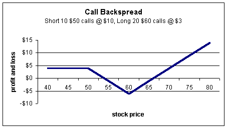
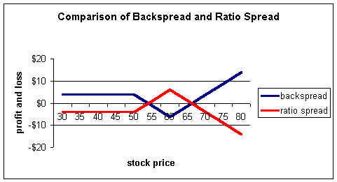
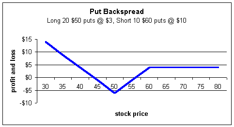
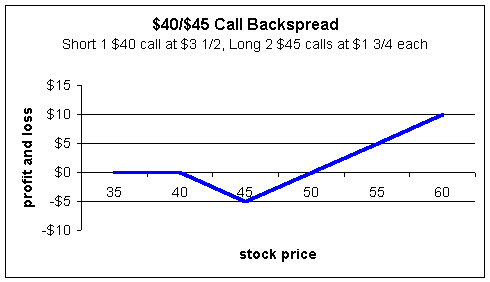
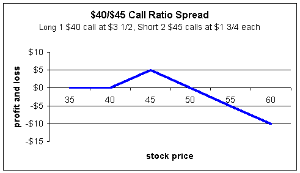

The backspread is similar to a ratio spread, except that it has unlimited profit instead of unlimited loss on the profit and loss diagram. It is the mirror image of the ratio spread. In fact, the backspread is often called a long ratio spread.
A call backspread involves the sale of a low strike price call and the purchase of a higher number of contracts at a higher price. For example, a trader may sell 10 $50 calls and buy 20 $60 calls, also known as a $50/$60 backspread.
The profit and loss diagram for a call backspread looks like this:
Assume the trader sells 10 $50 calls for $10 and buys 20 $60 calls for $3. This trade can be broken down to 10 (-1/2) spreads (please see our section on "Ratio Spreads" for more information). In other words, the trader sold one call and bought two calls, but did this ten times. For every call sold at $10, two were purchased at $3 for a total of $6. Therefore, the above trade was executed for a net credit of $4 (received $10 but paid $6). Depending upon prices and ratios used, backspreads may be entered for either debits or credits.
For any stock price below $50, the trader will keep the net credit of $4, as both calls will expire worthless. If the stock moves above $50, the trader will head into loss territory because he is short these calls. However, if the stock continues upward, the $60 calls will come to the rescue and stop the losses. The maximum loss will occur at $60 where the trader will lose ten points (the difference in strikes) less the credit of $4, for a maximum loss of $6. Because there are two $60 calls for every short $50, the trader will start to make gains above $60. In order to make up for the $6 loss, the stock must rise to $66 to reach break-even. The downside break-even can be found in two ways: One, the trader must make up the $6 loss from the low point of $60; Or, he can sustain a loss of $4 (the initial credit) above $50. Either way you choose, you will see the downside break-even is $54.
Notice that if the trader had purchased the 10 $50 calls and sold 20 $60 calls, he would have a ratio spread. Ratio spreads and backspreads are opposites. The following is a profit and loss diagram comparing the two spreads:
If a trader is bullish on a stock yet fears a market turndown, then both sides of the market can be played with a backspread. The trader will capture all upside profits yet have a credit (or less of a loss if entered as a debit) if the stock should fall. Typically, novice traders will enter long straddles to play the upside and downside. However, with long straddles, the break-even points become very wide due to the fact that premiums are paid for both the call and put and must be made up. With the backspread, a trader can custom-tailor his bias in the stock and create better risk-reward ratios. The trader using a call backspread is more bullish, but fears a downturn. He will not profit as much as a long straddle trader, but does not have as much at risk either.
Backspreads are another great example of just how versatile options can be.
Backspreads can be used with put options too. To enter a put backspread, the trader will sell a high strike put and buy a higher number of a lower strike put. For example, a trader may sell 10 $60 puts and buy 20 $50 puts.
The profit and loss diagram for a put backspread looks like this:
Assume the trader sells the $60 puts for $10 and buys the $50 puts for $3. As above, this spread can be broken down into 10 (-1/2) spreads. This means that for every one put that was sold, two were purchased. The trader receives $10 from the sale of the $60, but pays $6 for the two $50 puts for a net credit of $4. If the stock should rise, the trader is left with a credit, as both puts will expire worthless. If the stock falls below $60, the trader heads into loss territory, as he is short these puts. If the stock continues to fall to $50, the losses stop and gains will start, as he is long two of the $50 puts for every one of the $60 puts that are short.
So for any stock price below $50, the trader starts to gain. At $50, the trader is down $10 (the difference in strikes), but received $4 from the initial trade for a net loss of $6. Because this $6 must be made up, the break-even will be $6 points below the $50 strike or $44. If the stock falls below $44, the trader will start to show profits. Where is the upside break-even? The trader will need to make up the $6 from the max loss point at $50 to the upside; equally, he can sustain a $4 loss (the initial credit) below $60. Either way of looking at it will yield an upside break-even of $56.
With puts, traders are betting more on the downside, but they fear the upside risk. A put backspread allows them to capture both possibilities while favoring the position to the downside.
Let's run through an actual example using Intel (INTC), which is currently trading around $41. The option quotes are as follows:
Dec $40 Call = Bid:$3-1/2 Ask: $3-3/4
Dec $45 Call = Bid:$1-3/8 Ask: $1-3/4
Assume a trader wants to place a $40/$45 backspread and sells the $40 call for $3-1/2 and buys 2 $45 calls for $1-3/4 each or $3-1/2 for a net debit of zero shown by:
Short 1 $40 call = -$3
1/2
long 2 $45 calls at $1 3/4 each = +$3 1/2
Net debit $0
Here is what the profit and loss diagram will look like for the above trade:
The trader will make nothing if the stock falls, and lose $5 if the stock closes at $45. If the stock is above $45, the trader will start to recover losses and eventually break even at $50. Any stock price above $50 will yield a profit. Note the break-even points of $40 and $50. If the stock closes between these two points, the trader ends up with a loss.
Remember we said the trade opposite the backspread is the ratio spread? Well, the floor trader who executes the above backspread will have the ratio spread (assuming the trades are not matched with other orders or positions). The floor trader's profit and loss diagram will look like this:
Backspreads are great tools; especially for active traders. They generally require level 2 option approval (ratio spreads require level 3). Many traders shy away from ratio and backspreads because of the initial complexity in understanding them. However, with a little work, you can quickly find the maximum gain and loss points as well as the break-evens. They are a wonderful tool for option traders, so you should take the time to understand them if you want advance to a higher level of trading!